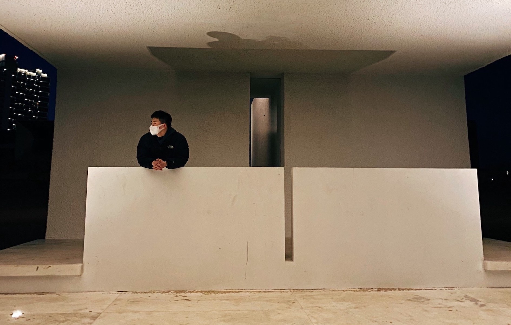

Virtual Reality
Design and development adaptation of virtual environment on PC and Oculus Rift, including model building, rendering optimization.
Design and development adaptation of virtual environment on PC and Oculus Rift, including model building, rendering optimization.
Data processing, use visualization to construct models, and prediction or make decision via machine learning.
Design prototype of software and device via cognitive psychology and human-computer interaction. Future, multimodal interaction for the disabled and the aged.
The spatial awareness, rendering capabilities and intelligence needed to build mixed reality via Hololens2 and Microsoft Cloud.
Have you noticed some scenes that happened in your memory? Honestly, this picture made me remember my childhood, and I think I have dreamed of this ever. This phenomenon is called the effect of the hippocampus, which is people's perception of what's happening in other multiverses on the same timeline. Misperceiving or judging immediate information as "a picture in memory " due to a brain processing error. In the movie "Fight Club", Jack famously said, "I've been living a life of deja vu. Everywhere I go, I feel as if I've been there."

What are we talking about when we talk about eternity? In the indescribable year 2020, people have experienced uncounted changes. What is 'eternal' in the ever-changing present? How does art reflect the times we live in, and how does art transcend The Times to reach 'eternity'? There is nothing eternal that expects time but maybe LOVE.
In the second decade of the new century, for many of us, the anxiety and confusion caused by the urban rhythm, the rapid changes in technological means, the media environment, and the scale linkage with the social system are far beyond the artist. The intensity of works that try to extract "inspiration" from reality. It's also hard to see these exaggerated transformations and free associations with a simple sense of humour—the dancing labourer or the workshop worker caught in a bizarre relationship. But the artist does not seem to be aware of this change in mentality. Her creations have always maintained a "Chinese speed", and the side effects of this speed are emerging: the works reproduce the spirit of the times step by step, which is compressed or sacrificed.
Again, you can't connect the dots looking forward; you can only connect them
looking backwards. So you have to trust that the dots will somehow connect in your
future. You have to trust in something - your gut, destiny, life, karma, whatever.
This approach has never let me down, and it has made all the difference in my
life. Sometimes life hits you in the head with a brick. Don't lose faith. I'm
convinced that the only thing that kept me going was that I loved what I did. You've
got to find what you love.